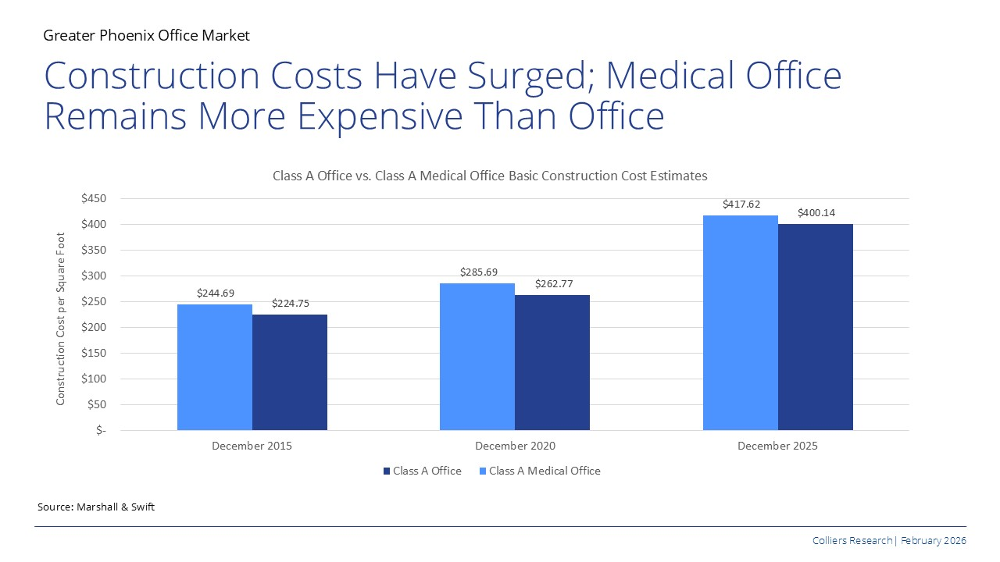

Construction costs for both Class A office and medical office buildings in Phoenix have surged sharply over the pasts decade, with estimates increasing by roughly 70% - 78% between 2015 and 2025. It is because of higher material prices, labor shortages and stricter building requirements following the pandemic, which have significantly increased overall development costs across commercial real estate.
Medical office construction costs have consistently remained more expensive than traditional office space due to some specialized infrastructure requirements. Healthcare facilities require enhanced mechanical, electrical, and plumbing (MEP) systems—which can account for 35% to 50% of total construction costs—along with higher ventilation standards, reinforced structural design for imaging equipment, and more complex interior build-outs to support clinical functions. These technical specifications add significant costs compared to standard office developments.